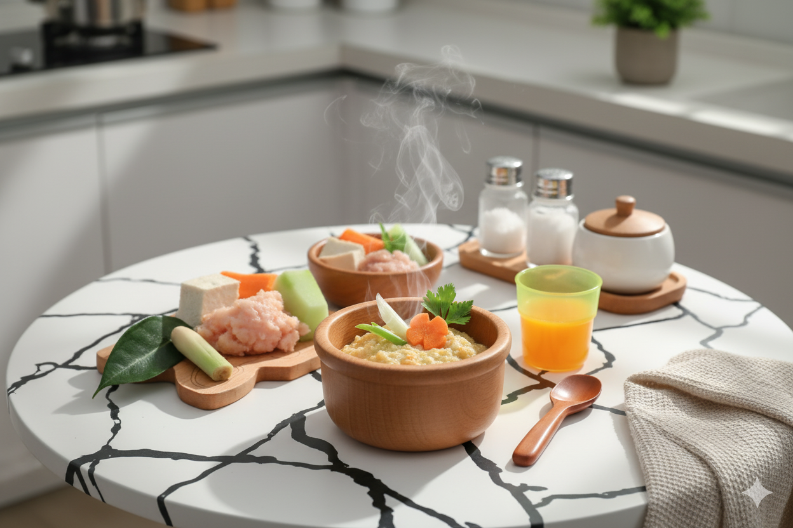

Informasi nilai gizi per porsi :
Energi
96
kkal
Protein
4.6
gr
Lemak
4.1
gr
Kontribusi energi sebesar 48% dari kebutuhan makanan tambahan sehari.
Cara Membuat
- Tumis bumbu halus sampai harum, masukan ayam cincang sampai berubah warna.
- Masukan air kaldu ayam, santan, salam, sereh dan daun jeruk masak sampai mendidih.
- Masukan nasi, tahu dan labu siam dan wortel yang sudah diiris kecil-kecil masak sampai semua bahan matang dan empuk.
- Haluskan sampai tekstur yang diinginkan. Sajikan selagi hangat
RESEP UNTUK
3 PORSIBahan
- 60 gr (6 sdm) Nasi putih
- 45 gr (4.5 sdm) Daging ayam cincang
- 30 gr (1 buah kecil) Tahu
- 30 gr (3 sdm) Labu siam
- 15 gr (1.5 sdm) wortel
- 1 lembar Salam
- 1 batang Sereh
- 1 lembar Daun jeruk
- 5 gr (1 sdm) Minyak goreng
- 30 ml (3 sdm) Santan
- 300 ml Air kaldu ayam
Bumbu Halus
- 1 siung bawang merah
- 1 siung bawang putih
- 1 cm Kunyit
- 1 cm Jahe
Buah
- 100 gr (3 buah kecil) Jeruk (diambil sarinya)